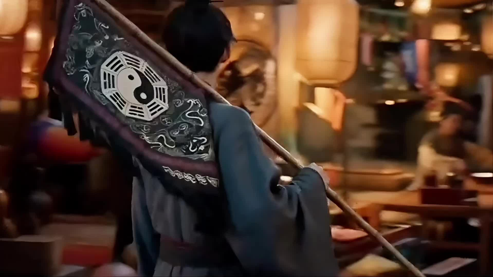
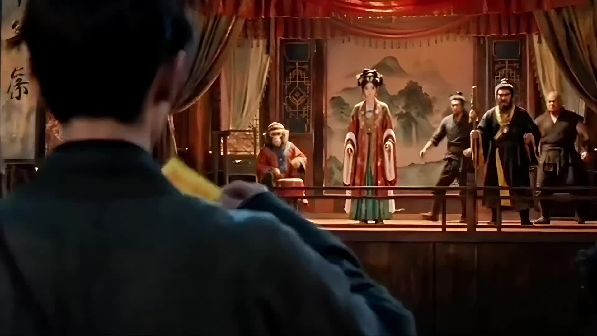
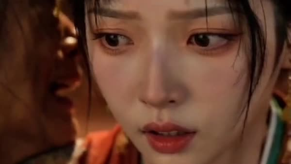
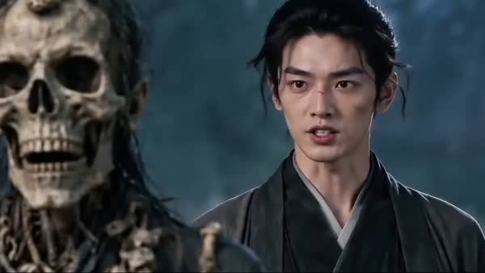

《捉妖》是一项基于生成式人工智能技术完成的个人影像创作。项目尝试探索 AI 在角色设计、视觉构建以及叙事影像制作中的应用方式。不同于单纯的视觉生成实验，本项目以叙事创作为基础，通过导演规划控制 AI 生成内容，使技术服务于整体影像表达。
Creative Direction项目从故事概念与视觉风格出发，建立整体影像方向。前期围绕世界观设定、人物形象、场景氛围、视觉风格进行规划，随后结合 AI 工具完成视觉探索，并通过后期剪辑重新组织影像节奏。
Creative Exploration生成式 AI 正在改变影像生产方式，AI 在本项目中不仅承担视觉生成作用，也成为导演探索影像表达的新媒介。
故事构思与视觉设定
规划镜头结构与视觉表达
导演控制下的 AI 视觉探索
后期剪辑与最终影像整合



